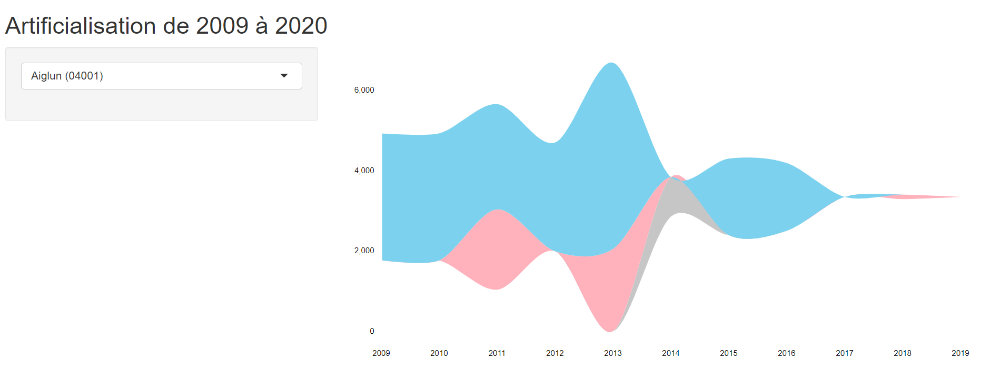

Chapitre 8 Dataviz
8.1 Ajoute le stream

On ajoute le streamgraph.
8.2 ui.R
mainPanel(
streamgraphOutput("streamPlot")
)8.3 server.R
output$streamPlot <- renderStreamgraph({
myStream <- flux %>% makeStream(codeInsee)
return(myStream)
})► Voir cette version (a402e8385afcf0c350ac0841037a69383e85eace)